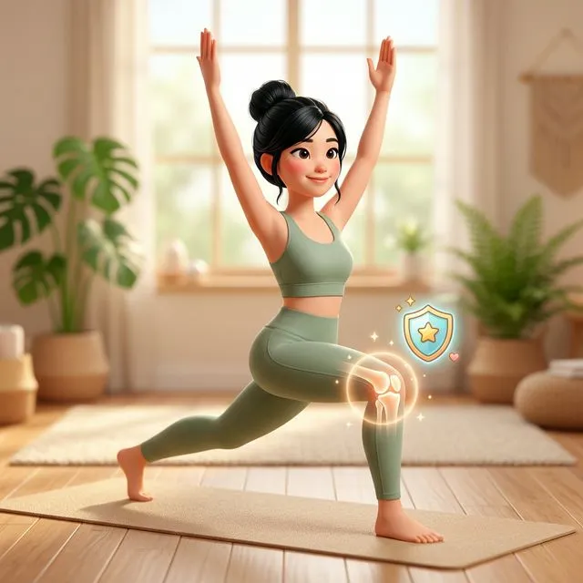

Đây là tài liệu nằm trong học phần Applied Anatomy & Biomechanics thuộc khóa đào tạo YTT 200h tại Giang Metta Yoga Academy. Bài viết đi sâu vào phân tích cơ chế giải phẫu, nguyên lý chịu lực và nghệ thuật Cueing (sức mạnh khẩu lệnh) để điều chỉnh lỗi sai phổ biến nhất ở học viên: Quá duỗi khớp gối.
Là giáo viên Yoga, chắc chắn bạn đã từng gặp trường hợp này: Bạn hô lớp vào tư thế Tam Giác (Trikonasana) hoặc Gập người về trước (Uttanasana). Một số học viên — đặc biệt là những người rất dẻo — có đôi chân thẳng tắp, nhưng nếu nhìn kĩ, khớp gối của họ bị bẻ cong ngược ra phía sau như một cánh cung.
Chào mừng bạn đến với hội chứng Hyperextension (Quá duỗi khớp).
1. Quá duỗi khớp gối (Genu Recurvatum) là gì?
Đầu gối là một khớp bản lề (Hinge joint). Theo thiết kế sinh học, nó chỉ được phép gấp lại (Flexion) và duỗi thẳng (Extension) đến mức 0 độ. Quá duỗi xảy ra khi khớp gối vượt qua mốc 0 độ này, bẻ ngược ra sau (thường vượt quá góc -5 độ đến -10 độ).
Điều này có nghĩa là "ổ khóa" sinh học của khớp đã hỏng tạm thời hoặc bẩm sinh lỏng lẻo. Lực của toàn bộ cơ thể lúc này không được gánh bởi hệ thống cơ bắp (Muscular System), mà đang dồn ép trực tiếp lên:
- Dây chằng chéo trước (ACL - Anterior Cruciate Ligament)
- Sụn chêm (Meniscus)
- Bao khớp phía sau đầu gối
Và dây chằng thì không phải sợi thun. Càng kéo dãn, nó càng nhão ra và không bao giờ co lại như ban đầu được nữa.
2. Cơ chế Biomechanics trong tư thế Tam Giác (Trikonasana)
Để hiểu rõ hơn, hãy mổ xẻ cơ chế lực của Trikonasana trên chân trước. Khi học viên gập người sang nghiêng, trọng lượng thân trên đè xuống khung xương chậu, truyền qua xương đùi (Femur), qua đầu gối, xuống xương chày (Tibia) và chốt lại tại bàn chân.
Học viên bình thường:
Kích hoạt nhóm cơ đùi trước (Quadriceps) để kéo xương bánh chè (Patella) lên trên. Đầu gối vững vàng, trục Femur và Tibia thẳng hàng.
Học viên Hyperextension:
Cơ Quads bị tắt (nhả cơ). Cơ gối ấn gập ra sau. Lực cắt (Shear force) tác động mạnh lên sụn chêm, làm mòn sụn từ từ theo năm tháng.
3. Nghệ thuật Cueing: Chỉnh sửa không cần chạm (Hands-free Assist)
Một giáo viên giỏi không đợi đến khi phải chạy lại chạm vào học viên mới sửa được lỗi. Hãy dùng nghệ thuật Cueing (Sử dụng giọng nói) trước.
Đừng hô hô: "Chị A đừng duỗi thẳng chân quá!". Hãy nhớ quy tắc của Não bộ học viên: Não bộ không hiểu từ "không/đừng" một cách nhanh chóng khi đang vận động. Bạn cần hô hành động thay thế.
- Cue 1 (Nhận biết): "Những ai cảm thấy căng gắt ở sau nhượng chân..."
- Cue 2 (Hành động nhỏ): "...Hãy hơi nương nhẹ khớp gối lại, giống như bạn đang trùng chân xuống 1 milimet."
- Cue 3 (Kích hoạt cơ): "Bám chắc gốc ngón cái và gót chân. Rút nhẹ xương bánh chè lên đùi trên. Cảm nhận cơ đùi trước đang làm việc cứng lại."
4. Phương pháp dùng Dụng cụ (Props) & Hands-on
Nếu học viên vẫn không cảm nhận được (do proprioception - cảm nhận cơ thể yếu):
Dùng Props: Yêu cầu họ đặt một viên gạch (Block) dưới bắp chân, kê nghiêng 45 độ ngay dưới nhượng chân. Viên gạch hoạt động như một cái "phanh", cản trở xương chày bị đẩy lùi về phía sau.
Hands-on Assist: Tiến lại gần, nhẹ nhàng đặt 2 ngón tay (chỉ 2 ngón, đừng dùng cả bàn tay dồn lực đẩy) vào ngay hốc nhượng chân của học viên. Yêu cầu họ: "Chị hãy đẩy đầu gối về phía sau sao cho kẹp nhẹ lấy 2 ngón tay của em". Lập tức họ sẽ phải co nhẹ gối lại (Micro-bend).
5. Tổng kết cho Giáo viên
Việc ép học viên phải giữ chân "thẳng tắp như thước kẻ" là một lối tư duy dạy Yoga cũ kĩ. Yoga hiện đại tôn trọng Anatomical Variations (Biến thể Giải phẫu) của mỗi cá nhân.
Mục tiêu của chúng ta không phải là nhét học viên vào một tư thế hoàn hảo về mặt hình học, mà là thiết lập một định tuyến **an toàn nhất, chịu lực tốt nhất** cho hệ thống xương khớp của họ.
Đào sâu kiến thức giải phẫu giảng dạy?
Kiến thức này chỉ là 1/100 lượng thông tin bạn sẽ được trang bị trong học phần Anatomy và Teaching Methodology tại chương trình YTT 200h.
Nhận tư vấn Khóa Học YTT